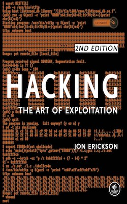
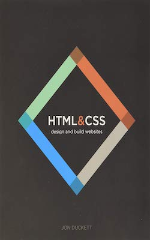
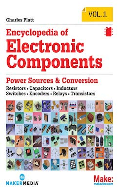
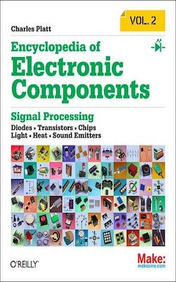
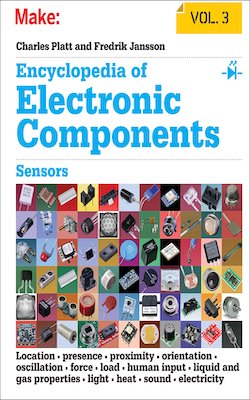
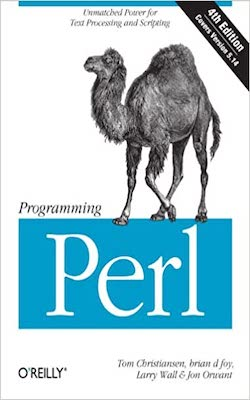
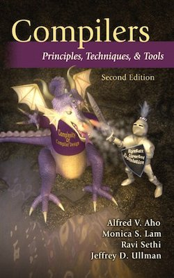
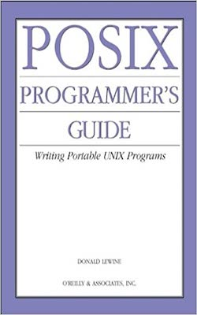

| Cover | Properties | Value |
|---|---|---|
|
||
| TITLE | CLEAN CODE: Best Tips and Tricks in the World of Clean Coding | |
| AUTHOR: | Elijah Lewis | |
| PUBLISHER: | Independently Published | |
| YEAR: | 2020 | |
| PAGES | 118 Pages | |
| PRICE: | $39.99 | |
| This book is about clean codes and how to write them. It is also about bad codes and how to clean them up. The dangers of writing messy code are real. Even if they function well now, sooner or later, several hours will be lost trying to figure them out in the nearest or far future. And thats if you are lucky. Dirty code has been known to ruin the entire project and cause the failure of otherwise great products. This book presents some of the simplest but highly effective tips and tricks that every developer needs to write a clean, smell-free code. It breaks down some of the challenges and hindrances that developers are likely to encounter on the road to writing clean code and offers time-tested strategies for overcoming them. If you are concerned about messy code and how it has been affecting the quality of your work, Clean Code: Best Tips and Tricks in the World of Clean Coding offers a clear road to the light. In this book, you will learn how to recognize bad code, how to write clean code from scratch, as well as the tips and tricks to clean up already dirty code to make it readable and error-free while maintaining functionality. | ||
| Cover | Properties | Value |
|---|---|---|
 |
||
| TITLE | Introduction to Algorithms, fourth edition | |
| AUTHOR: | Thomas H. Carmen, Charles E. Leiserson, Ronald L. Rivest | |
| PUBLISHER: | The MIT Press | |
| YEAR: | 2022 | |
| PAGES | 1312 Pages | |
| PRICE: | $153.98 | |
| A comprehensive update of the leading algorithms text, with new material on matchings in bipartite graphs, online algorithms, machine learning, and other topics. | ||
| Cover | Properties | Value |
|---|---|---|
 |
||
| TITLE | The Pragmatic Programmer from Journeyman to Master | |
| AUTHOR: | Andy Hunt, Dave Thomas | |
| PUBLISHER: | Addison-Wesley Professional | |
| YEAR: | 1999 | |
| PAGES | 352 Pages | |
| PRICE: | $24.00 | |
| Dave Thomas and Andy Hunt wrote the first edition of this influential book in 1999 to help their clients create better software and rediscover the joy of coding. These lessons have helped a generation of programmers examine the very essence of software development, independent of any particular language, framework, or methodology, and the Pragmatic philosophy has spawned hundreds of books, screencasts, and audio books, as well as thousands of careers and success stories. | ||
| Cover | Properties | Value |
|---|---|---|
 |
||
| TITLE | Embedded C Coding Standard | |
| AUTHOR: | Michael Barr | |
| PUBLISHER: | CreateSpace Independent Publishing | |
| YEAR: | 2018 | |
| PAGES | 84 Pages | |
| PRICE: | $5.99 | |
| Barr Group's Embedded C Coding Standard was developed to minimize bugs in firmware by focusing on practical rules that keep bugs out, while also improving the maintainability and portability of embedded software. The coding standard details a set of guiding principles as well as specific naming conventions and other rules for the use of data types, functions, preprocessor macros, variables and much more. Individual rules that have been demon- strated to reduce or eliminate certain types of bugs are highlighted1 | ||
| Cover | Properties | Value |
|---|---|---|
 |
||
| TITLE | Code Complete | |
| AUTHOR: | Steve McConnell | |
| PUBLISHER: | Microsoft Press | |
| YEAR: | 2004 | |
| PAGES | 960 Pages | |
| PRICE: | $68.05 | |
| Take a strategic approach to software construction and produce superior products with this fully updated edition of Steve McConnell's critically praised and award-winning guide to software development best practices. | ||
| Cover | Properties | Value |
|---|---|---|
 |
||
| TITLE | Effective Java | |
| AUTHOR: | Joshua Bloch | |
| PUBLISHER: | Pearson Education | |
| YEAR: | 2017 | |
| PAGES | 416 Pages | |
| PRICE: | $68.74 | |
| Since this Jolt-award winning classic was last updated in 2008, the Java programming environment has changed dramatically. Java 7 and Java 8 introduced new features and functions including, forEach() method in Iterable interface, default and static methods in Interfaces, Functional Interfaces and Lambda Expressions, Java Stream API for Bulk Data Operations on Collections, Java Time API, Collection API improvements, Concurrency API improvements, and Java IO improvements. | ||
| Cover | Properties | Value |
|---|---|---|
 |
||
| TITLE | Python Crash Course, 2nd Edition | |
| AUTHOR: | Eric Matthes | |
| PUBLISHER: | No Starch Press | |
| YEAR: | 2019 | |
| PAGES | 544 Pages | |
| PRICE: | $53.95 | |
| A fast-paced, no-nonsense, updated guide to programming in Python. If you've been thinking about learning how to code or picking up Python, this internationally bestselling guide to the most popular programming language is your quickest, easiest way to get started and go! Even if you have no experience whatsoever, Python Crash Course, 2nd Edition, will have you writing programs, solving problems, building computer games, and creating data visualizations in no time. | ||
| Cover | Properties | Value |
|---|---|---|
 |
||
| TITLE | Python Programming Books Set: Python Programming For Beginners & Complete Guide For Python Programming | |
| AUTHOR: | James P Long | |
| PUBLISHER: | Createspace Independent Publishing Platform | |
| YEAR: | 2015 | |
| PAGES | 466 Pages | |
| PRICE: | $23.50 | |
| Quick & Easy Guide to Python Programming For Beginners These Books Set is for those who are interested in learning Python programming language. The book "Python Programming For Beginners" and "Complete Guide For Python Programming" are Quick and Easy Guide for Programmers to learn python programming Language. These books include all the basics of python, data structures, operators, control statements, functions, classes, strings, etc. You can also learn about python modules, variables, packages, functions, classes, databases used in python programming. You can even learn about professional Python style, best practices, and good programming habits. Also, these guides include Improve application performance by writing extensions using multithreading. You can become a good python programmer by going through these books. In the end section you will find some commonly used programs written in the python language. Try them now!!! | ||
| Cover | Properties | Value |
|---|---|---|
| TITLE | Studyguide For Complete Procedure Coding Book | |
| AUTHOR: | Shelley C. Safian, Cram101 Textbook Reviews | |
| PUBLISHER: | Content Technologies Inc. | |
| YEAR: | 2011 | |
| PAGES | 274 Pages | |
| PRICE: | $32.95 | |
| Never HIGHLIGHT a Book Again Includes all testable terms, concepts, persons, places, and events. Cram101 Just the FACTS101 studyguides gives all of the outlines, highlights, and quizzes for your textbook with optional online comprehensive practice tests. Only Cram101 is Textbook Specific. Accompanies: 9780073401874. This item is printed on demand. | ||
| Cover | Properties | Value |
|---|---|---|
 |
||
| TITLE | Java: The Simple Guide to Learn Java Programming In No Time | |
| AUTHOR: | David Hoffman | |
| PUBLISHER: | Createspace Independent Publishing Platform | |
| YEAR: | 2016 | |
| PAGES | 50 Pages | |
| PRICE: | $11.95 | |
| In this book we will cover some finer points of more advanced programming aspects in the Java language. General programming guidelines and the use of exceptions in Java will be the subjects discussed. Coding standards for Java lead to greater consistency within the code as a whole. Improved consistency produces code that is more easily understood, and that means it is easier to develop and maintain. This leads to overall cost reduction of the applications that are created. Java code will exist for a long time; long after moving on to different projects. A major goal during development is to make sure that work can be transitioned to another developer, or to another team of developers. This ensures they can continue to maintain and enhance the work without investing an unreasonable effort to understand the code. Difficult to understand code runs the risk of being scrapped and rewritten. | ||
| Cover | Properties | Value |
|---|---|---|
 |
||
| TITLE | Python For Beginners: 2 Books In 1: Programming Book And Workbook. | |
| AUTHOR: | Itc Academy | |
| PUBLISHER: | Orion Edition Ltd | |
| YEAR: | 2021 | |
| PAGES | 358 Pages | |
| PRICE: | $51.99 | |
| It doesn't matter if you have never coded before; these guides will thoroughly explain to you everything about Python and data science. All manuals are written in a step-by-step and easy-to-digest manner so you will understand them without any trouble. | ||
| Cover | Properties | Value |
|---|---|---|
| TITLE | Coding All-in-One For Dummies | |
| AUTHOR: | Nikhil Abraham | |
| PUBLISHER: | For Dummies | |
| YEAR: | 2017 | |
| PAGES | 800 Pages | |
| PRICE: | $40.42 | |
| The demand for people with coding know-how exceeds the number of people who understand the languages that power technology. Coding All-in-One For Dummies gives you an ideal place to start when you're ready to add this valuable asset to your professional repertoire. Whether you need to learn how coding works to build a web page or an application or see how coding drives the data revolution, this resource introduces the languages and processes you'll need to know. | ||
| Cover | Properties | Value |
|---|---|---|
 |
||
| TITLE | Think Like a Programmer: An Introduction to Creative Problem Solving | |
| AUTHOR: | V. Anton Spraul | |
| PUBLISHER: | No Starch Press | |
| YEAR: | 2012 | |
| PAGES | 256 Pages | |
| PRICE: | $36.58 | |
| The real challenge of programming isn't learning a language's syntax, it's learning to creatively solve problems so you can build something great. In this one-of-a-kind text, author V. Anton Spraul breaks down the ways that programmers solve problems and teaches you what other introductory books often ignore: how to Think Like a Programmer. Each chapter tackles a single programming concept, like classes, pointers, and recursion, and open-ended exercises throughout challenge you to apply your knowledge. | ||
| Cover | Properties | Value |
|---|---|---|
|  | ||
| TITLE | Hacking : The Art of Exploitation, 2nd Edition | |
| AUTHOR: | Jon Erickson | |
| PUBLISHER: | No Starch Press | |
| YEAR: | 2008 | |
| PAGES | 488 Pages | |
| PRICE: | $53.62 | |
| Hacking is the art of creative problem solving, whether that means finding an unconventional solution to a difficult problem or exploiting holes in sloppy programming. Many people call themselves hackers, but few have the strong technical foundation needed to really push the envelope. | ||
| Cover | Properties | Value |
|---|---|---|
 |
||
| TITLE | Cracking the Coding Interview: 189 Programming Questions and Solutions | |
| AUTHOR: | Gayle Laakmann McDowell | |
| PUBLISHER: | CareerCup; 6th edition | |
| YEAR: | 2015 | |
| PAGES | 706 Pages | |
| PRICE: | $48.35 | |
| I am not a recruiter. I am a software engineer. And as such, I know what it's like to be asked to whip up brilliant algorithms on the spot and then write flawless code on a whiteboard. I've been through this as a candidate and as an interviewer. | ||
| Cover | Properties | Value |
|---|---|---|
 |
||
| TITLE | Coding Projects in Python | |
| AUTHOR: | DK, Craig Steele | |
| PUBLISHER: | DK Children | |
| YEAR: | 2017 | |
| PAGES | 224 Pages | |
| PRICE: | $22.65 | |
| Python for beginners: you will learn how to build amazing graphics, fun games, and useful apps using Python, an easy yet powerful free programming language available for download. | ||
| Cover | Properties | Value |
|---|---|---|
|  | ||
| TITLE | HTML and CSS: Design and Build Websites | |
| AUTHOR: | Jon Duckett | |
| PUBLISHER: | Wiley | |
| YEAR: | 2011 | |
| PAGES | 512 Pages | |
| PRICE: | $35.63 | |
| Every day, more and more people want to learn some HTML and CSS. Joining the professional web designers and programmers are new audiences who need to know a little bit of code at work (update a content management system or e-commerce store) and those who want to make their personal blogs more attractive. Many books teaching HTML and CSS are dry and only written for those who want to become programmers, which is why this book takes an entirely new approach. | ||
| Cover | Properties | Value |
|---|---|---|
 |
||
| TITLE | Learning Web Design: A Beginner's Guide to HTML, CSS, JavaScript, and Web Graphics | |
| AUTHOR: | Jennifer Robbins | |
| PUBLISHER: | O'Reilly Media | |
| YEAR: | 2018 | |
| PAGES | 808 Pages | |
| PRICE: | $76.33 | |
| Do you want to build web pages, but have no previous experience? This friendly guide is the perfect place to start. You will begin at square one, learning how the Web and web pages work, and then steadily build from there. By the end of the book, you will have the skills to create a simple site with multi-column pages that adapt for mobile devices. | ||
| Cover | Properties | Value |
|---|---|---|
 |
||
| TITLE | Eloquent JavaScript, 3rd Edition: A Modern Introduction to Programming | |
| AUTHOR: | Marijin Haverbeke | |
| PUBLISHER: | No Starch Press | |
| YEAR: | 2018 | |
| PAGES | 472 Pages | |
| PRICE: | $34.10 | |
| JavaScript lies at the heart of almost every modern web application, from social apps like Twitter to browser-based game frameworks like Phaser and Babylon. Though simple for beginners to pick up and play with, JavaScript is a flexible, complex language that you can use to build full-scale applications. | ||
| Cover | Properties | Value |
|---|---|---|
 |
||
| TITLE | C++ Primer | |
| AUTHOR: | Stanley Lippman | |
| PUBLISHER: | Addison-Wesley Professional | |
| YEAR: | 2012 | |
| PAGES | 976 Pages | |
| PRICE: | $64.19 | |
| Fully updated and recast for the newly released C++11 standard, this authoritative and comprehensive introduction to C++ will help you to learn the language fast, and to use it in modern, highly effective ways. Highlighting today’s best practices, the authors show how to use both the core language and its standard library to write efficient, readable, and powerful code. | ||
| Cover | Properties | Value |
|---|---|---|
 |
||
| TITLE | Android Application Development All-in-One For Dummies | |
| AUTHOR: | Barry Burd | |
| PUBLISHER: | For Dummies | |
| YEAR: | 2020 | |
| PAGES | 800 Pages | |
| PRICE: | $28.32 | |
| If you're an aspiring or beginning programmer interested in creating apps for the Android market this is your comprehensive, one-stop guide. Android Application Development All-in-One For Dummies covers the information you absolutely need to get started developing apps for Android. Inside, you'll quickly get up to speed on Android programming concepts and put your new knowledge to use to manage data, program cool phone features, refine your applications, navigate confidently around the Android native development kit, and add important finishing touches to your apps. | ||
| Cover | Properties | Value |
|---|---|---|
 |
||
| TITLE | iOS Programming: The Big Nerd Ranch Guide | |
| AUTHOR: | Christian Keur | |
| PUBLISHER: | Big Nerd Ranch Guides | |
| YEAR: | 2020 | |
| PAGES | 416 Pages | |
| PRICE: | $46.25 | |
| iOS Programming: The Big Nerd Ranch Guide leads you through the essential concepts, tools, and techniques for developing iOS applications. After completing this book, you will have the know-how and the confidence you need to tackle iOS projects of your own. Based on Big Nerd Ranch's popular iOS Bootcamp course and its well-tested materials and methodology, this bestselling guide teaches iOS concepts and coding in tandem. The result is instruction that is relevant and useful. | ||
| Cover | Properties | Value |
|---|---|---|
|  | ||
| TITLE | Encyclopedia of Electronic Components Volume 1 | |
| AUTHOR: | Charles Platt | |
| PUBLISHER: | Make Community LLC | |
| YEAR: | 2012 | |
| PAGES | 296 Pages | |
| PRICE: | $14.99 | |
| Want to know how to use an electronic component? This first book of a three-volume set includes key information on electronics parts for your projects, complete with photographs, schematics, and diagrams. You will learn what each one does, how it works, why its useful, and what variants exist. No matter how much you know about electronics. | ||
| Cover | Properties | Value |
|---|---|---|
|  | ||
| TITLE | Encyclopedia of Electronic Components Volume 2 | |
| AUTHOR: | Charles Platt | |
| PUBLISHER: | Make Community LLC | |
| YEAR: | 2014 | |
| PAGES | 316 Pages | |
| PRICE: | $23.99 | |
| Want to know how to use an electronic component? This first book of a three-volume set includes key information on electronics parts for your projects, complete with photographs, schematics, and diagrams. You will learn what each one does, how it works, why its useful, and what variants exist. No matter how much you know about electronics. | ||
| Cover | Properties | Value |
|---|---|---|
|  | ||
| TITLE | Encyclopedia of Electronic Components Volume 3 | |
| AUTHOR: | Charles Platt | |
| PUBLISHER: | Make Community LLC | |
| YEAR: | 2016 | |
| PAGES | 258 Pages | |
| PRICE: | $14.99 | |
| Want to know how to use an electronic component? This first book of a three-volume set includes key information on electronics parts for your projects, complete with photographs, schematics, and diagrams. You will learn what each one does, how it works, why its useful, and what variants exist. No matter how much you know about electronics. | ||
| Cover | Properties | Value |
|---|---|---|
 |
||
| TITLE | Structure and Interpretation of Computer Programs | |
| AUTHOR: | Harold Abelson | |
| PUBLISHER: | The MIT Press | |
| YEAR: | 1996 | |
| PAGES | 657 Pages | |
| PRICE: | $72.93 | |
| Structure and Interpretation of Computer Programs has had a dramatic impact on computer science curricula over the past decade. This long-awaited revision contains changes throughout the text. There are new implementations of most of the major programming systems in the book, including the interpreters and compilers, and the authors have incorporated many small changes that reflect their experience teaching the course at MIT since the first edition was published. | ||
| Cover | Properties | Value |
|---|---|---|
 |
||
| TITLE | The Art of Electronics, 3rd Edition | |
| AUTHOR: | Paul Horowitz, Winfield Hill | |
| PUBLISHER: | Cambridge University Press | |
| YEAR: | 1980 | |
| PAGES | 1125 Pages | |
| PRICE: | $95.99 | |
| "Wow. Chapter 5 details every circuit artifact that I have encountered in the past 30 years in a thorough, pragmatic, and straightforward way. My only "twinge" is that it discloses and explains (in glorious graphical detail and with real part numbers) many topics that I thought were my personal trade secrets. I love the plots. I know that it must take an enormous effort to collate all of the device characteristics. It is worth the effort. The way the data is presented allows the reader to get terrific perspective on a lot of landscape in a single view. Nice work. | ||
| Cover | Properties | Value |
|---|---|---|
 |
||
| TITLE | The Art of Electronics: The x-Chapters | |
| AUTHOR: | Paul Horowitz, Winfield Hill | |
| PUBLISHER: | Cambridge University Press | |
| YEAR: | 2020 | |
| PAGES | 522 Pages | |
| PRICE: | $52.99 | |
| The Art of Electronics: The x-Chapters expands on topics introduced in the best-selling third edition of The Art of Electronics, completing the broad discussions begun in the latter. In addition to covering more advanced materials relevant to its companion, The x-Chapters also includes extensive treatment of many topics in electronics that are particularly novel, important, or just exotic and intriguing. | ||
| Cover | Properties | Value |
|---|---|---|
 |
||
| TITLE | Common Lisp: The Language | |
| AUTHOR: | Guy L. Steele | |
| PUBLISHER: | Digital Press | |
| YEAR: | 1984 | |
| PAGES | 465 Pages | |
| PRICE: | $69.89 | |
| CLOS, the Common Lisp Object System, with new features to support function overloading and object-oriented programming, plus complete tech- nical specifications Loops, a powerful control structure for multiple variables Conditions, a generalization of the error signaling mechanism Series and generators Plus other subjects not part of the ANSI standards but of interest to pro- fessional programmers. | ||
| Cover | Properties | Value |
|---|---|---|
|  | ||
| TITLE | Programming Perl - 4th Edition | |
| AUTHOR: | Larry Wall | |
| PUBLISHER: | O'Reilly Publishing Media | |
| YEAR: | 1991 | |
| PAGES | 1176 Pages | |
| PRICE: | $54.99 | |
| Adopted as the undisputed Perl bible soon after the first edition ap- peared in 1991, Programming Perl is still the go-to guide for this highly practical language. Perl began life as a super-fueled text processing util- ity, but quickly evolved into a general purpose programming language that has helped hundreds of thousands of programmers, system administrators, and enthusiasts, like you, get your job done | ||
| Cover | Properties | Value |
|---|---|---|
 |
||
| TITLE | The Design and Implementation of the 4.3BSD UNIX Operating System | |
| AUTHOR: | Samuel J. Leffler, Marshal Kirk Mckusick | |
| PUBLISHER: | Addison-Wesley | |
| YEAR: | 1991 | |
| PAGES | 471 Pages | |
| PRICE: | $15.99 | |
| The first authoritative description of Berkeley UNIX, its design and implementation. Book covers the internal structure of the 4.3 BSD systems and the concepts, data structures and algorithms used in implementing the system facilities - Google Books blurb | ||
| Cover | Properties | Value |
|---|---|---|
|  | ||
| TITLE | Compilers: Principles, Techniques and Tools | |
| AUTHOR: | Alfred V. Aho, Ravi Sethi, and Jeffrey D. Ullman | |
| PUBLISHER: | Addison-Wesley | |
| YEAR: | 1986 | |
| PAGES | 1040 Pages | |
| PRICE: | $44.99 | |
| Compilers: Principles, Techniques and Tools, known to professors, students, and developers worldwide as the "Dragon Book," is available in a new edition. Every chapter has been completely revised to reflect developments in software engineering, programming languages, and computer architecture that have occurred since 1986, when the last edition published. The authors, recognizing that few readers will ever go on to construct a compiler, retain their focus on the broader set of problems faced in software design and software development. | ||
| Cover | Properties | Value |
|---|---|---|
|  | ||
| TITLE | POSIX Programmer's Guide | |
| AUTHOR: | Donald Lewine | |
| PUBLISHER: | O'Reilly Publishing Media | |
| YEAR: | 1991 | |
| PAGES | 640 Pages | |
| PRICE: | $14.97 | |
| This guide, intended as an explanation of the POSIX standard and as a reference for the POSIX. 1 programming library, helps you write more portable programs. Most UNIX systems today are POSIX compliant because the federal government requires it for its purchases. Even OSF and UI agree on support for POSIX. Unfortunately, given the manufacturer's documentation, it can be difficult to distinguish system-specific features from those features defined by POSIX. The POSIX Programmer's Guide is especially helpful if you are writing programs that must run on multiple UNIX platforms. | ||
| Cover | Properties | Value |
|---|---|---|
 |
||
| TITLE | Design Patterns: Elements of Reusable Object-Oriented Software | |
| AUTHOR: | Erich Gamma, Richard Helm, Ralph Johnson, John Vlisside | |
| PUBLISHER: | Addison Wesley Professional | |
| YEAR: | 1994 | |
| PAGES | 431 Pages | |
| PRICE: | $51.99 | |
| These texts cover the design of object-oriented software and examine how to investigate requirements, create solutions and then translate designs into code, showing developers how to make practical use of the most significant recent developments. A summary of UML notation is included. | ||